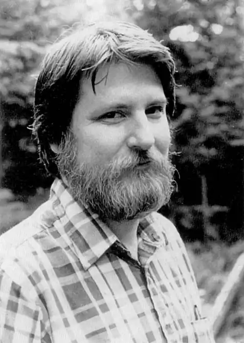
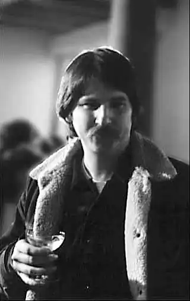

Джoн Херберт Варлі pодился 9 серпня 1947 року в Остіні, штат Техас. Коли йому було десять років, його батьки переїхали в Порт-Артур. Але середню школу "High School Nederland" Варлі закінчив в маленькому містечку під дивною назвою Нідерланди. Справа в тому, що міста Порт-Артур і Нідерланди — це сусіди, і утворюють єдину конгломерацію під назвою "Southeast Texas Regional Airport", куди входить ще і місто Бомонт.
Після продовжив навчання в Мічиганському державному університеті на факультеті фізики, потім перейшов на факультет англійської мови. Але незадовго до свого 20-річчя Варлі раптово кидає навчання і їде в Сан-Франциско, де приєднується до руху хіпі. Після цього Варлі вів життя, повну "пригод і бродяжництва", жив в Портленді, в Юджині (штат Орегон), в Нью-Йорку, знову в Сан-Франциско, і в Лос-Анжелесі. Перепробував безліч робіт, і часто далеко не самих презентабельних: був чорноробом, розвозив піцу, і навіть жебракував. Поки, нарешті, не вирішив заробляти на життя писанням книг. А поштовхом до такого рішення послужила знаменита стаття Хайнлайна, де описувалися п'ять відомих правил як стати письменником-фантастом.
Дебютував в фантастиці розповіддю "Пікнік неподалік" (1974, "Fantasy & Science Fiction") і незабаром зарекомендував себе як один з найцікавіших письменників 70-х — 80-х років. За свіжості ідей, складності змісту, витонченості композиції Джону Варлі практично не було рівних. Oчень швидко Варлі стали приємно називати — "Новим Хайнлайном". І це не випадково, адже його цикл — "Eight Worlds", критики часто порівнюють зі знаменитою хайнлайновской "Історією майбутнього". Розповіді Варлі вийшли в чотирьох збірниках — і кожен з них отримав премію "Локус". Взагалі ж мала форма принесла Джону Варлі п'ять премій: дві — "Х'юго" і три "Хьюго", а також п'ять премій журналу "Локус". А дві його повісті "Нав'язливість зору" (1978) і "Натисніть ВВЕДЕННЯ" (1984) справили свого часу справжній фурор і зібрали всі можливі премії, і до сих пір вважаються одними з найкращих і знаменитих творів в американській фантастиці. Ще одну премію "Локус" отримав роман "Титан" в 1980 г. Дія першого роману Варлі — "The Ophiuchi Hotline" (1977) — простягається з 500 років вперед і є одним з центральних в його історії майбутнього "Eight Worlds". Це масштабне полотно отримало високу оцінку соратників по цеху. Трилогія "Гея" (1979-1984) розповідає про проблеми, що виникли після початку дослідження одного з супутників Сатурна, в результаті чого дослідники потрапляють в інший світ зі своїми, що не схожими на земні, законами. Роман "Millennium" (1983), за яким у 1989 р був знятий відомий фільм, присвячений подорожі в часі екіпажу і пасажирів гине літака. Його твори перекладені на 16 мов. Джон Вaрлі одружений, у нього троє дітей, а ще він дуже любить своїх домашніх тварин, в числі яких собака, три кішки і морські коники. Були ще опосум і Восьминіжка, але останній, на жаль, помер. Як говорить сам Варлі, йому подобається писати, читати і, коли він собі це може дозволити, — подорожувати. Зараз Варлі живе в Каліфорнії разом зі своєю дружиною Лі Емметт, яка одночасно є і його редактором.